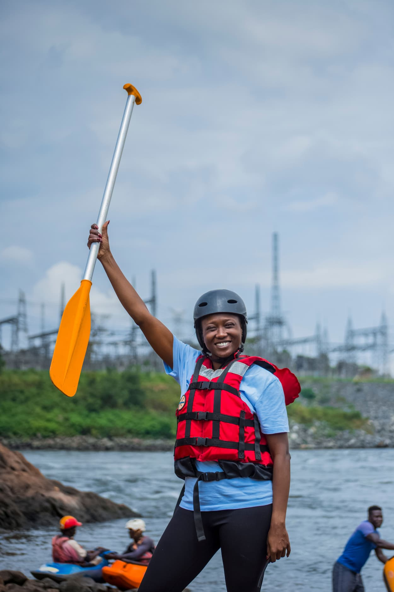

We exist to bring people face to face with the raw power of the river. We lead each trip with expert skill and safety first, so our guests can push their limits, conquer the rapids and come home with memories that last a lifetime.



We exist to bring people face to face with the raw power of the river. We lead each trip with expert skill and safety first, so our guests can push their limits, conquer the rapids and come home with memories that last a lifetime.
Founded in 1998 by two friends with a borrowed raft and a love for wild water, White Water Rafting Co. has grown from weekend river runs into a trusted adventure company. More than 50,000 guests and 25 years later, we still lead every trip with the same passion: safety first, adventure always, and deep respect for the river that started it all.